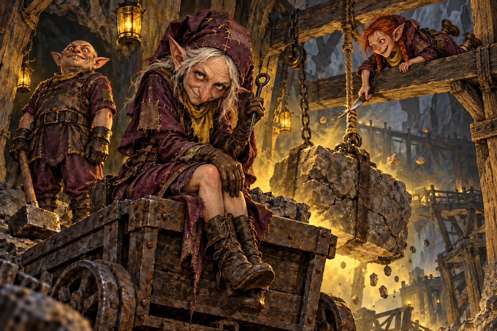

Bad ideas.
Excellent timing.
Meet the Delvers. Reckless underground troublemakers who leave themselves exposed for a bigger payoff—and return the punishment when it comes.

The ten-card pack
Kickback is the new signature Rare. Overdig, Ambush and Open Guard trade safety for power. Blowback sends the cracks back; Cave-In brings the ceiling down.
Plum. Limestone. A streak of bad judgment.
Crooked hoods, oversized gloves, patched protection and dangerously improvised mining tools. Sulfur-yellow accents sharpen the plum palette; silver and amethyst distinguish the Rare.
Ten new illustrations: unsettling stillness, obsessive focus and unpredictable movement. Every card has its own character, setting and silhouette. Card rules follow the updated starter draft.